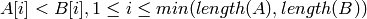
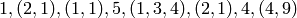
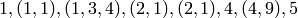
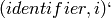
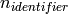
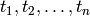
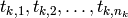
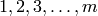

Airline Dataset¶
The Airline data set consists of flight arrival and departure details for all commercial flights from 1987 to 2008. The approximately 120MM records (CSV format), occupy 120GB space. The data set was used for the Visualization Poster Competition, JSM 2009. The winning entries can be found here . To quote the objectives
“The aim of the data expo is to provide a graphical summary of important features of the data set. This is intentionally vague in order to allow different entries to focus on different aspects of the data, but here are a few ideas to get you started:
- When is the best time of day/day of week/time of year to fly to minimise delays?
- Do older planes suffer more delays?
- How does the number of people flying between different locations change over time?
- How well does weather predict plane delays?
- Can you detect cascading failures as delays in one airport create delays in others? Are there critical links in the system?”
In this chapter, I will demonstrate RHIPE code samples to create similar graphics found in the winning entries [SAS] and [FLUSA]
| [SAS] | Congestion in the Sky: Vizualising Domestic Airline Traffic with SAS, Rick Wicklin and Robert Allison, SAS Institute. http://stat-computing.org/dataexpo/2009/posters/wicklin-allison.pdf |
| [FLUSA] | Delayed, Cancelled, On-Time, Boarding ... Flying in the USA, Heike Hofmann, Di Cook, Chris Kielion, Barret Schloerke, Jon Hobbs, Adam Loy,Lawrence Mosley, David Rockoff, Yuanyuan Sun, Danielle Wrolstad and Tengfei. Yin, Iowa State University, http://stat-computing.org/dataexpo/2009/posters/hofmann-cook.pdf |
Copying the Data to the HDFS (or a Distributed Downloader!)¶
The Airline data can be found at this site . In this example, we download the data sets for the individual years and save them on the HDFS with the following code (with limited error checks)
1 2 3 4 5 6 7 8 9 10 11 12 13 14 15 16 17 18 19 20 21 22 23 24 25 | library(Rhipe)
rhinit(TRUE,TRUE)
map <- expression({
msys <- function(on){
system(sprintf("wget %s --directory-prefix ./tmp 2> ./errors",on))
if(length(grep("(failed)|(unable)",readLines("./errors")))>0){
stop(paste(readLines("./errors"),collapse="\n"))
}}
lapply(map.values,function(x){
x=1986+x
on <- sprintf("http://stat-computing.org/dataexpo/2009/%s.csv.bz2",x)
fn <- sprintf("./tmp/%s.csv.bz2",x)
rhstatus(sprintf("Downloading %s", on))
msys(on)
rhstatus(sprintf("Downloaded %s", on))
system(sprintf('bunzip2 %s',fn))
rhstatus(sprintf("Unzipped %s", on))
rhcounter("FILES",x,1)
rhcounter("FILES","_ALL_",1)
})
})
z <- rhmr(map=map,ofolder="/airline/data",inout=c("lapply"), N=length(1987:2008),
mapred=list(mapred.reduce.tasks=0,mapred.task.timeout=0),copyFiles=TRUE)
j <- rhex(z,async=TRUE)
|
A lot is demonstrated in this code. RHIPE is loaded via the call in line 1. A MapReduce job takes a set of input keys, in this case the numbers 1987 to 2008. It also takes a corresponding set of values. The parameter inout in line 22 tells RHIPE how to convert the input the data to key, value pairs. If the input file is a binary file but inout specifies text as the input, RHIPE will not throw an error but provide very unexpected key,value pairs. inout in this case is lapply, which treats the numbers 1 to N (in line 22) as both keys and values.
These N key,value pairs are partitioned into splits. How they are partitioned depends on the value of inout[1]. For text files (inout[1]='text'), the data is split into roughly equi-length blocks of e.g. 128MB each. A CSV text file will have approximately equal number of lines per block (not necessarily). RHIPE will launch R across all the compute nodes. Each node is responsible for processing a the key,value pairs in its assigned splits.
This processing is performed in the map argument to rhmr. The map argument is an R expression. Hadoop will read key,value pairs, send them to RHIPE which in turn buffers them by storing them in a R list: map.values and map.keys respectively. Once the buffer is full, RHIPE calls the map expression. The default length of map.values (and map.keys) is 10,000 [1].
In our example, N is 22. The variables map.values and map.keys will be lists of numbers 1 to 22 and strings “1” to “22” respectively. The entries need not be in the order 1 to 22.
rhmr is a call that packages the MapReduce job which is sent to Hadoop. It takes an input folder which can contain multiple files and subfolders. All the files will be given as input. If a particular file cannot be understood by the input format (e.g. a text file given to inout[1]='sequence'), RHIPE will throw an error.
The expression downloads the CSV file, unzips its, and stores in the folder tmp located in the current directory. No copying is performed. The current directory is a temporary directory on the local filesystem of the compute node, not on the HDFS. Upon successful completion of the split, the files stored in tmp (of the current directory) will be copied to the output folder specified by ofolder in the call to rhmr. Files are copied only if copyFiles is set to TRUE (in line 23).
Once a file has been downloaded, we inform Hadoop of our change in status, via rhastatus. The figure Example of rhstatus displays the various status of each of the 22 splits (also called Tasks)
Example of rhstatus
Once a file has been downloaded, we increment a distributed count. Counts belong to families, a single family contains many counters. The counter for group G and name N is incremented via a call to rhcounter. We increment a counter for each of the 22 files. Since each file is downloaded once, this is essentially a flag to indicate successful download. A count of files downloaded is tracked in Files/_ALL_ .
The operation of Hadoop is affected by many options, some of which can be found in Options For RHIPE. Hadoop will terminate splits (Tasks) after 10 minutes if they do not invoke rhstatus or return. Since each download takes approximately 30 minutes (the minimum is 4 minutes, the maximum is 42 minutes, the mean is 30 minutes), Hadoop will kill the tasks. We tell Hadoop to not kill long running tasks by setting mapred.task.timeout to 0. We do not to need to reduce our results so we set mapred.reduce.tasks to 0. Output from the map is written directly to the output folder on the HDFS. We do not have any output. These options are passed in the mapred argument.
The call to rhex launches the job across Hadoop. We use the async argument to return control of the R console to the user. We can monitor the status in two ways
- Print the return value of rhex. The name of the job can be changed by giving a value to jobname in the call to rhmr. The same information can be found at the Hadoop job tracker.
1 2 3 4 5 6 7 8 9 10 11 12 13 14 15 16 17 18 19 20 21 22 23 24 25 26 27 | > j
RHIPE Job Token Information
--------------------------
URL: http://spica:50030/jobdetails.jsp?jobid=job_201007281701_0053
Name: 2010-07-28 23:33:44
ID: job_201007281701_0053
Submission Time: 2010-07-28 23:33:45
State: RUNNING
Duration(sec): 11.702
Progess
pct numtasks pending running complete failed
map 0 22 1 21 0 0
reduce 0 0 0 0 0 0
> j
RHIPE Job Token Information
--------------------------
URL: http://spica:50030/jobdetails.jsp?jobid=job_201007281701_0053
Name: 2010-07-28 23:33:44
ID: job_201007281701_0053
Submission Time: 2010-07-28 23:33:45
State: RUNNING
Duration(sec): 56.417
Progess
pct numtasks pending running complete failed
map 1 22 0 22 0 0
reduce 0 0 0 0 0 0
|
- By calling rhstatus, giving it the value returned from rhex or the job ID (e.g. job_201007281701_0053).
1 2 3 4 5 6 7 8 9 10 11 12 13 14 15 16 17 18 19 20 21 22 23 24 25 | > a <- rhstatus(j) ## or rhstatus("job_201007281701_0053")
> a$state
[1] "RUNNING"
> a$duration
[1] 902.481
> a$counters
$counters
$counters$`Job Counters `
Launched map tasks
22
$counters$FileSystemCounters
FILE_BYTES_READ HDFS_BYTES_WRITTEN
127162942 127162942
$counters$`"FILES"`
1987.0 "_ALL_"
1 1
$counters$`Map-Reduce Framework`
Map input records Spilled Records Map output records
22 0 0
$counters$job_time
[1] 902.481
|
This distributed download took 45 minutes to complete, 15 seconds more than the longest running download (2007.csv.bz2). A sequential download would have taken several hours.
Note
It is important to note that the above code is mostly boiler plate. There is almost no lines to handle distribution across a cluster or task restart in case of transient node failure. The user of RHIPE need only consider how to frame her argument in the concepts of MapReduce.
Converting to R Objects¶
The data needs to be converted to R objects. Since we will be doing repeated analyses on the data, it is better to spend time converting them to R objects making subsequent computations faster, rather than tokenizing strings and converting to R objects for every analysis.
A sample of the text file
1987,10,23,5,1841,1750,2105,2005,PS,1905,NA,144,135,NA,60,51,LAX,SEA,954,NA,NA,0,NA,0,...
1987,10,24,6,1752,1750,2010,2005,PS,1905,NA,138,135,NA,5,2,LAX,SEA,954,NA,NA,0,NA,0,...
...
...
The meaning of the columns can be found here . Rather than store the entire 120MM rows as one big data frame, it is efficient to store it as rectangular blocks of R rows and M columns. We will not store all the above columns only the following:
- Dates: day of week, date, month and year (1,2,3, and 4)
- Arrival and departure times: actual and scheduled (5,6,7 and 8)
- Flight time: actual and scheduled (12 and 13)
- Origin and Destination: airport code, latitude and longitude (17 and 18)
- Distance (19)
- Carrier Name (9)
Since latitude and longitude are not present in the data sets, we will compute them later as required. Carrier names are located in a different R data set which will be used to do perform carrier code to carrier name translation.
We will store the data set as blocks of 5000  5 rows and columns. These will
be the values. Every value must be mapped to a key. In this example, the keys
(indices) to these blocks will not have any meaning but will be unique. The key
is the first scheduled departure time.
5 rows and columns. These will
be the values. Every value must be mapped to a key. In this example, the keys
(indices) to these blocks will not have any meaning but will be unique. The key
is the first scheduled departure time.
The format of the data is a Sequence File, which can store binary representations of R objects.
1 2 3 4 5 6 7 8 9 10 11 12 13 14 15 16 17 18 19 20 21 22 23 24 25 26 27 28 29 30 31 32 33 34 35 36 37 38 39 40 | setup <- expression({
convertHHMM <- function(s){
t(sapply(s,function(r){
l=nchar(r)
if(l==4) c(substr(r,1,2),substr(r,3,4))
else if(l==3) c(substr(r,1,1),substr(r,2,3))
else c('0','0')
})
)}
})
map <- expression({
y <- do.call("rbind",lapply(map.values,function(r){
if(substr(r,1,4)!='Year') strsplit(r,",")[[1]]
}))
mu <- rep(1,nrow(y));yr <- y[,1]; mn=y[,2];dy=y[,3]
hr <- convertHHMM(y[,5])
depart <- ISOdatetime(year=yr,month=mn,day=dy,hour=hr[,1],min=hr[,2],sec=mu)
hr <- convertHHMM(y[,6])
sdepart <- ISOdatetime(year=yr,month=mn,day=dy,hour=hr[,1],min=hr[,2],sec=mu)
hr <- convertHHMM(y[,7])
arrive <- ISOdatetime(year=yr,month=mn,day=dy,hour=hr[,1],min=hr[,2],sec=mu)
hr <- convertHHMM(y[,8])
sarrive <- ISOdatetime(year=yr,month=mn,day=dy,hour=hr[,1],min=hr[,2],sec=mu)
d <- data.frame(depart= depart,sdepart = sdepart
,arrive = arrive,sarrive =sarrive
,carrier = y[,9],origin = y[,17]
,dest=y[,18],dist = y[,19], year=yr, month-mn, day=dy
,cancelled=y[,22], stringsAsFactors=FALSE)
d <- d[order(d$sdepart),]
rhcollect(d[c(1,nrow(d)),"sdepart"],d)
})
reduce <- expression(
reduce = {
lapply(reduce.values,function(i)
rhcollect(reduce.key,i))}
)
mapred <- list(rhipe_map_buff_size=5000)
z <- rhmr(map=map,reduce=reduce,setup=setup,inout=c("text","sequence")
,ifolder="/airline/data/",ofolder="/airline/blocks",mapred=mapred,orderby="numeric")
rhex(z)
|
The setup expression is loaded into the R session once for every split. Remember a split can consist of many map.values that need to be processed. For text files as input, a split is 128MB or whatever your Hadoop block size is. Lines 12-14, iterate over the lines and tokenizing them. The first line in each downloaded file is the column year which must be ignored (see line 13). The lines of text are aggregated using rbind and time related columns converted to datetime objects. The data frame is sorted by scheduled departure and saved to disk indexed by the range of scheduled departures in the data frame. The size of the value (data frame) is important. RHIPE will can write any sized object but cannot read key,values that are more than 256MB. A data frame of 5000 rows and 8 columns fits very well into 256MB. This is passed to Hadoop in line 37.
Running R across massive data can be illuminating. Without the calls to ISOdatetime, it is much faster to complete.
Sorted keys¶
A reduce is not needed in this example. The text data is blocked into data frames and written to disk. With 128MB block sizes and each block a split, each split being mapped by one R session, there 96 files each containing several data frames. The reduce expression writes each incoming intermediate value (a data frame) to disk. This is called an identity reducer which can be used for
1. For map file indexing. The intermediate keys are sorted. In the identity reduce, these keys are written to disk in sorted order. If the output format (inout[2]) is map, the output can be used as an external memory hash table. Given a key, RHIPE can use Hadoop to very quickly discover the location of the key in the sorted (by key) output data and return the associated value. Thus even when no reduce logic is required the user can provide the identity reduce to create a queryable Map File from the map output.
2. Intermediate keys are sorted. But they can be sorted in different ways. RHIPE’s default is byte ordering i.e the keys are serialized to bytes and sorted byte wise. However, byte ordering is very different from semantic ordering. Thus keys e.g. 10,-1,20 which might be byte ordered are certainly not numerically ordered. RHIPE can numerically order keys so that in the reduce expression the user is guaranteed to receive the keys in sorted numeric order. In the above code, we request this feature in line 38. Numeric sorting is as follows: keys A and B are ordered if and of unit length or or  [2]. For keys  the ordering is  Using this ordering, all the values in a given file will be ordered by the range of the scheduled departures. Using this custom sorter can be slower than the default byte ordering. Bear in mind, the keys in a part file will be ordered but keys in one part file need not be less than those in another part file.
To achieve ordering of keys set orderby in the call to rhmr to one of bytes (default), integer, numeric (for doubles) or character (alphabetical sorting) in the mapred argument to rhmr. If the output format is sequence, you also need to provide a reducer which can be an identity reducer. Note, if your keys are discrete, it is best to use integer ordering. Values of NA can throw of ordering and will send all key,values to one reducer causing a severe imbalance.
reduce = expression({
reduce={ lapply(reduce.values,function(r) rhcollect(reduce.key,r)) }
})
3. To decrease the number of files. In this case decreasing the number of files is hardly needed, but it can be useful if one has more thousands of splits.
In situations (1) and (3), the user does not have to provide the R reduce expression and can leave this parameter empty. In situation (2), you need to provide the above code. Also, (2) is incompatible with Map File outputs (i.e inout[2] set to map). Case (2) is mostly useful for time series algorithms in the reduce section e.g. keys of the form  where identifier is an object and i ranges from 1 to . For each key, the value is sorted time series data. The reducer will receive the values for the keys in the order of i for a given identifier. This also assumes the user has partitioned the data on identifier (see the part parameter of rhmr: for this to work, all the keys with the same identifier need to be sent to the same reducer). For an example see Streaming Data?.
A sample data frame (last 4 columns removed):
depart sarrive carrier origin dest dist cancelled
2880 1988-05-01 01:02:01 ... 1988-05-01 01:59:01 DL SLC SEA 689 0
3770 1988-05-01 01:10:01 ... 1988-05-01 02:13:01 DL JAX FLL 318 0
2137 1988-05-01 01:10:01 ... 1988-05-01 01:59:01 DL TPA PBI 174 0
Demonstration of using Hadoop as a Queryable Database¶
Sightly artificial: store all Southwest Airlines information indexed by year,month,and day. Each (year, month, day) triplet will have all flight entries that left on that day. Using the above data set as the source, the Southwest lines are selected and sent to the reducer with the (year, month,day) key. All flights with the same (year, month) will belong to the same file. Given a (year, month,day) triplet, we can use the Map File output format to access the associated flight information in seconds rather than subsetting using MapReduce.
1 2 3 4 5 6 7 8 9 10 11 12 13 14 15 16 17 18 19 20 21 22 23 24 25 | map <- expression({
h <- do.call("rbind",map.values)
d <- h[h$carrier=='WN',,drop=FALSE]
if(nrow(d)>0){
e <- split(d,list(d$year,d$month,d$mday))
lapply(e,function(r){
k <- as.vector(unlist(r[1,c("year","month","mday")])) ## remove attributes
rhcollect(k, r)
})
}
})
reduce <- expression(
pre = { collec <- NULL },
reduce = {
collec <- rbind(collec, do.call("rbind",reduce.values))
collec <- collec[order(collec$depart),]
},
post = {
rhcollect(k, collec)
}
)
z <- rhmr(map=map,reduce=reduce,combiner=TRUE,inout=c("sequence","map")
,ifolder="/airline/blocks/",ofolder="/airline/southwest"
,mapred=list(rhipe_map_buff_size=10))
rhex(z)
|
Attributes are removed in line 8, for otherwise we have to retrieve a data frame with a data frame with column names and row names instead of a more convenient numeric vector. The map expression combines the individual data frames. Each data frame has 5000 rows, hence rhipe_map_buff_size is set to 10 for a combined data frame of 50000 rows in line 32. This is crucial. The default value for rhipe_map_buff_size is 10,000. Binding 10,000 data frames of 5000 rows each creates a data frame of 50MN rows - too unwieldy to compute with in R (for many types of operations). Data frames for Southwest Airlines (carried code=WN) are created and emitted with the call to rhcollect in line 15. These are combined in the reduce since data frames for the same (year, month,day) triplet can be emitted from different map expressions. Since this is associative and commutative we use a combiner. The output format (inout[[2]]) is map, so we can access the flights for any triplet with a call to rhgetkey which returns a list of key,value lists.
1 2 3 4 5 6 7 8 9 | > a <- rhgetkey(list(c(88,2,17)),"/airline/southwest")
> a[[1]][[1]]
[1] 93 0 1
> head(a[[1]][[2]][,1:9])
depart sarrive carrier origin dest dist cancelled
23648 1993-01-01 00:00:01 ... 1993-01-01 13:35:01 WN RNO LAS 345 1
20714 1993-01-01 07:20:01 ... 1993-01-01 08:40:01 WN SFO SAN 447 0
37642 1993-01-01 07:25:01 ... 1993-01-01 10:15:01 WN OAK PHX 646 0
316110 1993-01-01 07:30:01 ... 1993-01-01 08:30:01 WN OAK BUR 325 0
|
Analyses¶
We compute some summaries and displays to understand the data.
Top 20 cities by total volume of flights.¶
What are the busiest cities by total flight traffic. JFK will feature, but what are the others? For each airport code compute the number of inbound, outbound and all flights.
1 2 3 4 5 6 7 8 9 10 11 12 13 14 15 16 17 18 19 20 21 22 23 24 25 | map <- expression({
a <- do.call("rbind",map.values)
inbound <- table(a[,'origin'])
outbound <- table(a[,'dest'])
total <- table(unlist(c(a[,'origin'],a['dest'])))
for(n in names(total)){
inb <- if(is.na(inbound[n])) 0 else inbound[n]
ob <- if(is.na(outbound[n])) 0 else outbound[n]
rhcollect(n, c(inb,ob, total[n]))
}
})
reduce <- expression(
pre={sums <- c(0,0,0)},
reduce = {
sums <- sums+apply(do.call("rbind",reduce.values),2,sum)
},
post = {
rhcollect(reduce.key, sums)
}
)
mapred$rhipe_map_buff_size <- 15
z <- rhmr(map=map,reduce=reduce,combiner=TRUE,inout=c("sequence","sequence")
,ifolder="/airline/blocks/",ofolder="/airline/volume"
,mapred=mapred)
rhex(z,async=TRUE)
|
The code is straightforward. I increased the value of rhipe_map_buff_size since we are doing summaries of columns. The figure Log of time to complete vs log of rhipe_map_buff_size. plots the time of completion vs the mean of three trials for different values of rhipe_map_buff_size. The trials set rhipe_map_buff_size to 5,10,15,20,25 and 125. All experiments (like the rest in the manual) were performed on a 72 core cluster across 8 servers with RAM varying from 16 to 64 GB.
Log of time to complete vs log of rhipe_map_buff_size.
Read the data into R and display them using the lattice library.
1 2 3 4 5 6 7 8 9 10 11 12 13 14 15 | counts <- rhread("/airline/volume")
aircode <- unlist(lapply(counts, "[[",1))
count <- do.call("rbind",lapply(counts,"[[",2))
results <- data.frame(aircode=aircode,
inb=count[,1],oub=count[,2],all=count[,3]
,stringsAsFactors=FALSE)
results <- results[order(results$all,decreasing=TRUE),]
results$airport <- sapply(results$aircode,function(r){
nam <- ap[ap$iata==r,'airport']
if(length(nam)==0) r else nam
})
library(lattice)
r <- results[1:20,]
af <- reorder(r$airport,r$all)
dotplot(af~log(r[,'all'],10),xlab='Log_10 Total Volume',ylab='Airport',col='black')
|
There are 352 locations (airports) of which the top 20 serve 50% of the volume (see Top 20 airports by volume of all flights.)
Top 20 airports by volume of all flights.
Carrier Popularity¶
Some carriers come and go, others demonstrate regular growth. In the following display, the log base 10 volume (total flights) over years are displayed by carrier. The carriers are ranked by their median volume (over the 10 year span).
As mentioned before, RHIPE is mostly boilerplate. Notice the similarities between this and previous examples (on a side note, to do this for 12GB of data takes 1 minute and 32 seconds across 72 cores and all the examples, except the download and conversion to R data frames, in the manual are less than 10 minutes)
1 2 3 4 5 6 7 8 9 10 11 12 13 14 15 16 17 18 19 20 21 22 23 24 | ## To create summaries
map <- expression({
a <- do.call("rbind",map.values)
total <- table(years=a[,'year'],a[,'carrier'])
ac <- rownames(total)
ys <- colnames(total)
for(yer in ac){
for(ca in ys){
if(total[yer,ca]>0) rhcollect(c(yer,ca), total[yer,ca])
}
}
})
reduce <- expression(
pre={sums <- 0},
reduce = {sums <- sums+sum(do.call("rbind",reduce.values))},
post = { rhcollect(reduce.key, sums) }
)
mapred <- list()
mapred$rhipe_map_buff_size <- 5
z <- rhmr(map=map,reduce=reduce,combiner=TRUE,inout=c("sequence","sequence")
,ifolder="/airline/blocks/",ofolder="/airline/carrier.pop"
,mapred=mapred)
z=rhex(z)
|
This is the RHIPE code to create summaries. We need to extract the data from Hadoop and create a display
1 2 3 4 5 6 7 8 9 10 11 12 13 14 15 16 17 18 19 20 21 22 23 24 25 26 27 28 29 30 31 32 33 34 | a <- rhread("/airline/carrier.pop")
head(a)
[[1]]
[[1]][[1]]
[1] "90" "AA"
[[1]][[2]]
[1] 711825
[[2]]
[[2]][[1]]
[1] "90" "AS"
yr <- as.numeric(unlist(lapply(lapply(a,"[[",1),"[[",1)))
carrier <- unlist(lapply(lapply(a,"[[",1),"[[",2))
count <- unlist(lapply(a,"[[",2))
results <- data.frame(yr=yr,carcode=carrier,count=count,stringsAsFactors=FALSE)
results <- results[order(results$yr,results$count,decreasing=TRUE),]
carrier <- read.table("~/tmp/carriers.csv",sep=",",header=TRUE,
stringsAsFactors=FALSE,na.strings="XYZB")
results$carrier <- sapply(results$carcode,function(r){
cd <- carrier[carrier$Code==r,'Description']
if(is.na(cd)) r else cd
})
results$yr <- results$yr+1900
carr <- reorder(results$carrier,results$count, median)
xyplot(log(count,10)~yr|carr, data=results,xlab="Years", ylab="Log10 count",col='black'
,scales=list(scale='free',tck=0.5,cex=0.7),layout=c(2,8),type='l'
,par.strip.text = list(lines = 0.8,cex=0.7),cex=0.5,
panel=function(...){
panel.grid(h=-1,v=-1)
panel.xyplot(...)
})
|
The graph is displayed above.
Proportion of Flights Delayed¶
Does this proportion increase with time? Consider the display with proportion of flights delayed in a day across the years. Each year a panel. 22 panels. A flight is delayed if the delay is greater than 15 minutes.
It is clear that proportion increases in the holidays (the ends of the panels). The code for this comes after the figures.
Proportion of flights delayed
Proportion of flights delayed (cont’d)
1 2 3 4 5 6 7 8 9 10 11 12 13 14 15 16 17 18 19 20 21 22 23 24 25 26 27 28 29 30 31 | map <- expression({
a <- do.call("rbind",map.values)
a$delay.sec <- as.vector(a[,'arrive'])-as.vector(a[,'sarrive'])
a <- a[!is.na(a$delay.sec),]
a$isdelayed <- sapply(a$delay.sec,function(r) if(r>=900) TRUE else FALSE)
e <- split(a,list(a$year,a$yday))
lapply(e,function(r){
n <- nrow(r); numdelayed <- sum(r$isdelayed)
rhcollect(as.vector(unlist(c(r[1,c("year","yday")]))), c(n, numdelayed))
})
})
reduce <- expression(
pre={sums <- c(0,0)},
reduce = {sums <- sums+apply(do.call("rbind",reduce.values),2,sum)},
post = { rhcollect(reduce.key, sums) }
)
mapred <- list()
mapred$rhipe_map_buff_size <- 5
z <- rhmr(map=map,reduce=reduce,combiner=TRUE,inout=c("sequence","sequence")
,ifolder="/airline/blocks/",ofolder="/airline/delaybyyear"
,mapred=mapred)
z=rhex(z)
b <- rhread("/airline/delaybyyear")
y1 <- do.call("rbind",lapply(b,"[[",1))
y2 <- do.call("rbind",lapply(b,"[[",2))
results <- data.frame(year=1900+y1[,1],yday=y1[,2],
nflight=y2[,1],ndelay=y2[,2])
results$prop <- results$ndelay/results$nflight
results <- results[order(results$year,results$yday),]
|
STL decomposition of proportion of flights delayed is the STL decomposition of p (the proportion of flights delayed). The seasonal panel clearly demonstrates the holiday effect of delays. They don’t seem to be increasing with time (see trend panel).
1 2 3 4 5 6 | prop <- results[,'prop']
prop <- prop[!is.na(prop)]
tprop <- ts(log(prop/(1-prop)),start=c(1987,273),frequency=365)
pdf("~/tmp/propdelayedxyplot.pdf")
plot(stl(tprop,s.window="periodic"))
dev.off()
|
STL decomposition of proportion of flights delayed
There is similar seasonality for weekly behavior. The figure Proportion of flights delayed by day of week. displays proportion of flights delayed by day of week. The code for this identical to the previous one except we split on a$wday and the key is r[1,c("wday")]. It appears Thursdays and Fridays can be quite trying.
Proportion of flights delayed by day of week.
Does the delay proportion change with hour? It appears it does (see Proportion of flights delayed by hour of day). The hours are scheduled departure times. Why are so many flights leaving in the wee hours (12-3) delayed?
Proportion of flights delayed by hour of day
The code to create Proportion of flights delayed by hour of day is
1 2 3 4 5 6 7 8 9 10 11 12 13 14 15 16 17 18 19 20 21 22 23 24 25 | map <- expression({
a <- do.call("rbind",map.values)
a$delay.sec <- as.vector(a[,'arrive'])-as.vector(a[,'sarrive'])
a <- a[!is.na(a$delay.sec),]
a$isdelayed <- sapply(a$delay.sec,function(r) if(r>=900) TRUE else FALSE)
a$hrs <- as.numeric(format(a[,'sdepart'],"%H"))
e <- split(a,a$hrs)
lapply(e,function(r){
n <- nrow(r); numdelayed <- sum(r$isdelayed)
rhcollect(as.vector(unlist(c(r[1,c("hrs")]))), c(n, numdelayed))
})
})
reduce <- expression(
pre={sums <- c(0,0)},
reduce = {sums <- sums+apply(do.call("rbind",reduce.values),2,sum)},
post = { rhcollect(reduce.key, sums) }
)
mapred <- list()
mapred$rhipe_map_buff_size <- 5
z <- rhmr(map=map,reduce=reduce,combiner=TRUE,inout=c("sequence","sequence")
,ifolder="/airline/blocks/",ofolder="/airline/delaybyhours"
,mapred=mapred)
z=rhex(z)
|
Distribution of Delays¶
Summaries are not enough and for any sort of modeling we need to look at the distribution of the data. So onto the quantiles of the delays. We will look at delays greater than 15 minutes. To compute approximate quantiles for the data, we simply discretize the delay and compute a frequency count for the unique values of delay. This is equivalent to binning the data. Given this frequency table we can compute the quantiles.
The distribution of the delay in minutes does not change significantly over months.
1 2 3 4 5 6 7 8 9 10 11 12 13 14 15 16 17 18 19 20 21 22 23 24 25 26 27 28 29 30 31 32 33 34 35 36 37 38 39 40 41 42 43 44 45 46 47 48 49 50 51 52 53 54 55 56 57 58 59 60 61 62 | map <- expression({
a <- do.call("rbind",map.values)
a$delay.sec <- as.vector(a[,'arrive'])-as.vector(a[,'sarrive'])
a <- a[!is.na(a$delay.sec),]
a$isdelayed <- sapply(a$delay.sec,function(r) if(r>=900) TRUE else FALSE)
a <- a[a$isdelayed==TRUE,] ## only look at delays greater than 15 minutes
apply(a[,c('month','delay.sec')],1,function(r){
k <- as.vector(unlist(r))
if(!is.na(k[1])) rhcollect(k,1) # ignore cases where month is missing
})
})
reduce <- expression(
pre={sums <- 0} ,
reduce = {sums <- sums+sum(unlist(reduce.values))},
post = { rhcollect(reduce.key, sums) }
)
mapred <- list()
mapred$rhipe_map_buff_size <- 5
z <- rhmr(map=map,reduce=reduce,combiner=TRUE,inout=c("sequence","sequence")
,ifolder="/airline/blocks/",ofolder="/airline/quantiledelay"
,mapred=mapred)
z=rhex(z)
b <- rhread("/airline/quantiledelay")
y1 <- do.call("rbind",lapply(b,"[[",1))
count <- do.call("rbind",lapply(b,"[[",2))
results <- data.frame(month = y1[,1], n=y1[,2], count=count)
results <- results[order(results$month, results$n),]
results.2 <- split(results, results$month)
discrete.quantile<-function(x,n,prob=seq(0,1,0.25),type=7){
sum.n<-sum(n)
cum.n<-cumsum(n)
np<-if(type==7) (sum.n-1)*prob+1 else sum.n*prob+0.5
np.fl<-floor(np)
j1<-pmax(np.fl,1)
j2<-pmin(np.fl+1,sum.n)
gamma<-np-np.fl
id1<-unlist(lapply(j1,function(r) seq_along(cum.n)[r<=cum.n][1]))
id2<-unlist(lapply(j2,function(r) seq_along(cum.n)[r<=cum.n][1]))
x1<-x[id1]
x2<-x[id2]
qntl<-(1-gamma)*x1+gamma*x2
qntl
}
DEL <- 0.05
results.3 <- lapply(seq_along(results.2),function(i){
r <- results.2[[i]]
a <- discrete.quantile(r[,2],r[,3],prob=seq(0,1,DEL))/60
data.frame(month=as.numeric(rep(names(results.2)[[i]],length(a))),prop=seq(0,1,DEL),qt=a)
})
results.3 <- do.call("rbind",results.3)
results.3$month <- factor(results.3$month,
label=c("Jan","Feb","March","Apr","May","June",
"July","August","September","October","November","December"))
xyplot(log(qt,2)~prop|month, data=results.3,cex=0.4,col='black',
scales=list(x=list(tick.number=10),y=list(tick.number=10)),
layout=c(4,3),type='l',
xlab="Proportion",ylab="log_2 delay (minutes)",panel=function(x,y,...){
panel.grid(h=-1,v=-1);panel.xyplot(x,y,...)
}
)
|
Quantile of minute delay (for delay > 15 minutes) across months
We can display the distribution by hour of day. The code is almost nearly the same. Differences are in line 8, where the hrs is used as the conditioning. But the results are more interesting. The delay amounts increase in the wee hours (look at panel 23,24,1,2 and 3)
1 2 3 4 5 6 7 8 9 10 11 12 13 14 15 16 17 18 19 20 21 22 23 24 | map <- expression({
a <- do.call("rbind",map.values)
a$delay.sec <- as.vector(a[,'arrive'])-as.vector(a[,'sarrive'])
a <- a[!is.na(a$delay.sec),]
a$isdelayed <- sapply(a$delay.sec,function(r) if(r>=900) TRUE else FALSE)
a <- a[a$isdelayed==TRUE,] ## only look at delays greater than 15 minutes
a$hrs <- as.numeric(format(a[,'sdepart'],"%H"))
apply(a[,c('hrs','delay.sec')],1,function(r){
k <- as.vector(unlist(r))
if(!is.na(k[1])) rhcollect(k,1)
})
})
reduce <- expression(
pre={sums <- 0} ,
reduce = {sums <- sums+sum(unlist(reduce.values))},
post = { rhcollect(reduce.key, sums) }
)
mapred <- list()
mapred$rhipe_map_buff_size <- 5
z <- rhmr(map=map,reduce=reduce,combiner=TRUE,inout=c("sequence","sequence")
,ifolder="/airline/blocks/",ofolder="/airline/quantiledelaybyhour"
,mapred=mapred)
z=rhex(z)
|
Quantile of minute delay (for delay > 15 minutes) by hour of day
Quantile of minute delay (for delay > 15 minutes) by hour of day (cont’d)
The distribution of delay times by airports. This could be analyzed for several airports, but we take the top 3 in terms of volumes. In this display, the quantiles of log_2 of the delay times (in minutes) for inbound and outbound for 4 different airports is plotted. The airports are in order of median delay time. Of note, the median delay time for Chicago (ORD) and San Francisco (SFO) is greater flying in than out (approximately an hour). For both Chicago and Dallas Fort Worth (DFW), the 75th percentile of inbound delays is greater than that for outbound. Quantile of minute delay for inbound and outbound for 4 different airports. Dotted red lines are 25%,50% and 75% uniform proportions. displays these differences.
1 2 3 4 5 6 7 8 9 10 11 12 13 14 15 16 17 18 19 20 21 22 23 24 25 26 27 28 29 | map <- expression({
cc <- c("ORD","SEA","DFW","SFO")
a <- do.call("rbind",map.values)
a <- a[a$origin %in% cc| a$dest %in% cc,]
if(nrow(a)>0){
a$delay.sec <- as.vector(a[,'arrive'])-as.vector(a[,'sarrive'])
a <- a[!is.na(a$delay.sec),]
a$isdelayed <- sapply(a$delay.sec,function(r) if(r>=900) TRUE else FALSE)
a <- a[a$isdelayed==TRUE,]
for(i in 1:nrow(a)){
dl <- a[i,'delay.sec']
if(a[i,'origin'] %in% cc) rhcollect(data.frame(dir="outbound",ap=a[i,"origin"]
,delay=dl,stringsAsFactors=FALSE),1)
if(a[i,'dest'] %in% cc) rhcollect(data.frame(dir="inbound",ap=a[i,"dest"]
,delay=dl,stringsAsFactors=FALSE),1)
}
}
})
reduce <- expression(
pre={sums <- 0} ,
reduce = {sums <- sums+sum(unlist(reduce.values))},
post = { rhcollect(reduce.key, sums) }
)
mapred <- list()
mapred$rhipe_map_buff_size <- 5
z <- rhmr(map=map,reduce=reduce,combiner=TRUE,inout=c("sequence","sequence")
,ifolder="/airline/blocks/",ofolder="/airline/inoutboundelay"
,mapred=mapred)
z=rhex(z)
|
Quantile of minute delay for inbound and outbound for 4 different airports. Dotted red lines are 25%,50% and 75% uniform proportions.
Carrier Delays¶
Is there a difference in carrier delays? We display the time series of proportion of delayed flights by carrier, ranked by carrier.
1 2 3 4 5 6 7 8 9 10 11 12 13 14 15 16 17 18 | ## For proportions and volumes
map <- expression({
a <- do.call("rbind",map.values)
a$delay.sec <- as.vector(a[,'arrive'])-as.vector(a[,'sarrive'])
a <- a[!is.na(a$delay.sec),]
a$isdelayed <- sapply(a$delay.sec,function(r) if(r>=900) TRUE else FALSE)
a$hrs <- as.numeric(format(a[,'sdepart'],"%H"))
e <- split(a,a$hrs)
lapply(e,function(r){
n <- nrow(r); numdelayed <- sum(r$isdelayed)
rhcollect(as.vector(unlist(c(r[1,c("carrier")]))), c(n, numdelayed))
})
})
reduce <- expression(
pre={sums <- c(0,0)},
reduce = {sums <- sums+apply(do.call("rbind",reduce.values),2,sum)},
post = { rhcollect(reduce.key, sums) }
)
|
Log base 2 volume of flights by carrier
Proportion of flights delayed by carrier. Compare this with the previous graph.
Busy Routes¶
Which are busy the routes? A simple first approach (for display purposed) is to create a frequency table for the unordered pair (i,j) where i and j are distinct airport codes. Displays this over the US map.
1 2 3 4 5 6 7 8 9 10 11 12 13 14 15 16 17 18 19 20 21 22 23 24 25 26 27 28 29 30 31 32 33 34 35 36 37 38 39 40 41 42 43 44 45 46 47 48 49 50 | map <- expression({
a <- do.call("rbind",map.values)
y <- table(apply(a[,c("origin","dest")],1,function(r){
paste(sort(r),collapse=",")
}))
for(i in 1:length(y)){
p <- strsplit(names(y)[[i]],",")[[1]]
rhcollect(p,y[[1]])
}
})
reduce <- expression(
pre={sums <- 0},
reduce = {sums <- sums+sum(unlist(reduce.values))},
post = { rhcollect(reduce.key, sums) }
)
mapred <- list()
mapred$rhipe_map_buff_size <- 5
mapred$mapred.job.priority="VERY_LOW"
z <- rhmr(map=map,reduce=reduce,combiner=TRUE,inout=c("sequence","sequence")
,ifolder="/airline/blocks/",ofolder="/airline/ijjoin"
,mapred=mapred)
z=rhex(z)
##Merge results
b=rhread("/airline/ijjoin")
y <- do.call("rbind",lapply(b,"[[",1))
results <- data.frame(a=y[,1],b=y[,2],count=
do.call("rbind",lapply(b,"[[",2)),stringsAsFactors=FALSE)
results <- results[order(results$count,decreasing=TRUE),]
results$cumprop <- cumsum(results$count)/sum(results$count)
a.lat <- t(sapply(results$a,function(r){
ap[ap$iata==r,c('lat','long')]
}))
results$a.lat <- unlist(a.lat[,'lat'])
results$a.long <- unlist(a.lat[,'long'])
b.lat <- t(sapply(results$b,function(r){
ap[ap$iata==r,c('lat','long')]
}))
b.lat["CBM",] <- c(0,0)
results$b.lat <- unlist(b.lat[,'lat'])
results$b.long <- unlist(b.lat[,'long'])
head(results)
a b count cumprop a.lat a.long b.lat b.long
1 ATL ORD 145810 0.001637867 33.64044 -84.42694 41.97960 -87.90446
2 LAS LAX 140722 0.003218581 36.08036 -115.15233 33.94254 -118.40807
3 DEN DFW 140258 0.004794083 39.85841 -104.66700 32.89595 -97.03720
4 LAX SFO 139427 0.006360250 33.94254 -118.40807 37.61900 -122.37484
5 DFW IAH 137004 0.007899200 32.89595 -97.03720 29.98047 -95.33972
6 DTW ORD 135772 0.009424311 42.21206 -83.34884 41.97960 -87.90446
|
Using the above data, the following figure draws lines from ORD (Chicago) to other destinations. The black points are the airports that handle 90% of the total air traffic volume. The grey points are the remaining airports. The flights from Chicago (ORD) are color coded based on volume carried e.g. red implies those routes carry the top 25% of traffic in/out of ORD.
Flights in and out of Chicago color coded by % cumulative contribution.
Out of Core Regression using biglm¶
RHIPE can be used as a means to transfer massive data sets sitting on the HDFS to the package [biglm] biglm takes a function that returns chunks of data frames. We can easily use this to compute the results of a linear regression on the airline data set. These functions work assuming the values are chunked data frames as the airline data set is stored (see above).
| [biglm] | biglm: bounded memory linear and generalized linear models http://cran.r-project.org/web/packages/biglm/index.html |
Streaming Data?¶
Some algorithms are left associative in their operands
 but not commutative. For example a streaming update
algorithm that computes the inter-arrival times of time series data for
different levels of a categorical variable. That is, the triangular series
 where k takes the levels of a
categorical variable C (which takes the values ). The
input are pairs  . In the following code, the data structure F is updated with the
datastructure contained in the values (see the map). The datastructures
are indexed in time by the timepoint - they need to be sent to the reducer
(for a given level of the categorical variable catlevel) in time order. Thus
the map sends the pair (catlevel, timepoint) as the key. By using the
part parameter (see line 39) all the data structures associated with the catlevel
are sent to the same R reduce process. This is vital since all the component
R expressions in the reduce are run in the same process and namespace. To
preserve numeric ordering we insist on the special map output key class (see
line 38). With this special key class, we cannot have a map output format.
In the reduce, the setup expression redsetup is run upon R startup (the
process assigned to several keys and their associated values). Then for each new
intermediate key (catlevel, timepoint), it runs the pre, reduce and
post. The lack of a post is because we have exactly one intermediate
value for a given key (assuming the time points for a category are unique).
The redclose expression is run when all keys and values have been processed
by the reducer and R is about to quit.
. In the following code, the data structure F is updated with the
datastructure contained in the values (see the map). The datastructures
are indexed in time by the timepoint - they need to be sent to the reducer
(for a given level of the categorical variable catlevel) in time order. Thus
the map sends the pair (catlevel, timepoint) as the key. By using the
part parameter (see line 39) all the data structures associated with the catlevel
are sent to the same R reduce process. This is vital since all the component
R expressions in the reduce are run in the same process and namespace. To
preserve numeric ordering we insist on the special map output key class (see
line 38). With this special key class, we cannot have a map output format.
In the reduce, the setup expression redsetup is run upon R startup (the
process assigned to several keys and their associated values). Then for each new
intermediate key (catlevel, timepoint), it runs the pre, reduce and
post. The lack of a post is because we have exactly one intermediate
value for a given key (assuming the time points for a category are unique).
The redclose expression is run when all keys and values have been processed
by the reducer and R is about to quit.
1 2 3 4 5 6 7 8 9 10 11 12 13 14 15 16 17 18 19 20 21 22 23 24 25 26 27 28 29 30 31 32 33 34 35 36 37 38 39 | map <- expression({
lapply(seq_along(map.values),function(r){
catlevel <- map.keys[[r]] #numeric
timepoint <- map.values[[r]]$timepoint #numeric
datastructure <- map.values[[r]]$data
key <- c(catlevel,timepoint)
rhcollect(key,datastructure)
})
})
redsetup <- expression({
currentkey <- NULL
})
reduce <- expression(
pre={
catlevel <- reduce.key[1]
time <- reduce.key[2]
if(!identical(catlevel,currentkey)){
## new categorical level
## so finalize the computation for
## the previous level e.g. use rhcollect
if(!identical(currentkey,NULL))
FINALIZE(F)
## store current categorical level
currentkey <- catlevel
## initialize computation for new level
INITIALIZE(F)
}
},
reduce={
F <- UPDATE(F, reduce.values[[1]])
})
redclose <- expression({
## need to run this, otherwise the last catlevel
## will not get finalized
FINALIZE(F)
})
rhmr(..., combiner=FALSE,setup=list(reduce=redsetup),cleanup=list(reduce=redclose),
orderby="numeric",
part=list(lims=1,type='numeric'))
|
Concrete (but artifical) Example¶
We will create a data set with three columns: the level of a categorical variable A, a time variable B and a value C. For each level of A, we want the sum of differences of C ordered by B within A.
Creating the Data set The column A is the key, but this is not important. There are 5000 levels of A, each level has 10,000 observations. By design the values of B are randomly written (sample), also for simplicity C is equal to B, though this need not be.
1 2 3 4 5 6 7 8 9 10 11 12 13 | library(Rhipe)
map <- expression({
N <- 10000
for( first.col in map.values ){
w <- sample(N,N,replace=FALSE)
for( i in w){
rhcollect(first.col,c(i,i))
}
}})
mapred <- list(mapred.reduce.tasks=0)
z=rhmr(map=map, N=5000, inout=c("lapply","sequence"),ofolder="/tmp/sort",
mapred=mapred)
rhex(z)
|
Sum of Differences The key is the value of A and B, the value is C.
1 2 3 4 5 | map <- expression({
lapply(seq_along(map.values),function(r){
f <- map.values[[r]]
rhcollect(as.integer(c(map.keys[[r]],f[1])),f[2])
})})
|
Thus each output from a map is a key (assuming there are not any duplicates for B for a given level of A), thus reduce.values has only one observation. All keys sharing the same level of A will be sent to one R process and the tuples as.integer(c(map.keys[[r]],f[1])) will be sorted. reduce.setup is called once when the R process starts processing its assigned partition of keys and reduce.post is called at the end (when all keys have been processed)
1 2 3 4 5 6 7 8 9 10 11 12 13 14 15 16 17 18 19 20 21 22 23 | reduce.setup <- expression({
newp <- -Inf
diffsum <- NULL
})
reduce <- expression(
pre={
if(reduce.key[[1]][1] != newp) {
if(newp>-Inf) rhcollect(newp, diffsum) #prevents -Inf from being collected
diffsum <- 0
lastval <- 0
newp <- reduce.key[[1]][1]
skip <- TRUE
}
},
reduce={
current <- unlist(reduce.values) #only one value!
if(!skip) diffsum <- diffsum + (current-lastval) else skip <- FALSE
lastval <- current
}
)
reduce.post <- expression({
if(newp>-Inf) rhcollect(newp,diffsum) #for the last key
})
|
To turn on the partitioning and ordering of keys,
1 2 3 4 5 | z <- rhmr(map=map,reduce=reduce, inout=c("sequence","sequence"),ifolder="/tmp/sort",
ofolder="/tmp/sort2", part=list(lims=1,type='integer'),
orderby="integer",cleanup=list(reduce=reduce.post),
setup=list(reduce=reduce.setup))
rhex(z)
|
Simple Debugging¶
Consider the example code used to compute the delay quantiles by month (see Delay Quantiles By Month ). We can use tryCatch for some simple debugging. See the error in line 7, there is no such variable isdelayed
1 2 3 4 5 6 7 8 9 10 11 12 13 14 15 16 17 18 19 20 21 22 23 24 25 26 27 28 | map <- expression({
tryCatch({
a <- do.call("rbind",map.values)
a$delay.sec <- as.vector(a[,'arrive'])-as.vector(a[,'sarrive'])
a <- a[!is.na(a$delay.sec),]
a$isdelayed <- sapply(a$delay.sec,function(r) if(r>=900) TRUE else FALSE)
a <- a[isdelayed==TRUE,] ## only look at delays greater than 15 minutes
apply(a[,c('month','delay.sec')],1,function(r){
k <- as.vector(unlist(r))
if(!is.na(k[1])) rhcollect(k,1) # ignore cases where month is missing
})
},error=function(e){
e$message <- sprintf("Input File:%s\nAttempt ID:%s\nR INFO:%s",
Sys.getenv("mapred.input.file"),Sys.getenv("mapred.task.id"),e$message)
stop(e) ## WONT STOP OTHERWISE
})
})
reduce <- expression(
pre={sums <- 0} ,
reduce = {sums <- sums+sum(unlist(reduce.values))},
post = { rhcollect(reduce.key, sums) }
)
mapred <- list()
mapred$rhipe_map_buff_size <- 5
z <- rhmr(map=map,reduce=reduce,combiner=TRUE,inout=c("sequence","sequence")
,ifolder="/airline/blocks/",ofolder="/airline/quantiledelay"
,mapred=mapred)
z=rhex(z)
|
Produces a slew of errors like (output slightly modified to fit page)
1 2 3 4 5 6 7 8 | 10/08/04 00:41:20 INFO mapred.JobClient: Task Id :
attempt_201007281701_0273_m_000023_0, Status : FAILED
java.io.IOException: MROutput/MRErrThread failed:java.lang.RuntimeException:
R ERROR
=======
Error in `[.data.frame`(a, isdelayed == TRUE, ) : Input File:
Attempt ID:attempt_201007281701_0273_m_000023_0
R INFO:object "isdelayed" not found
|
It can be very useful to provide such debugging messages since R itself doesn’t provide much help. Use this to provide context about variables, such printing the first few rows of relevant data frames (if required). Moreover, some errors don’t come to the screen instead the job finishes successfully (but very quickly since the R code is failing) but the error message is returned as a counter. The splits succeed since Hadoop has finished sending its data to R and not listening to for errors from the R code. Hence any errors sent from R do not trigger a failure condition in Hadoop. This is a RHIPE design flaw. To compensate for this, the errors are stored in the counter R_ERROR.
Unfortunately, RHIPE does not offer much in the way of debugging. To run jobs locally that is, Hadoop will execute the job in a single thread on one computer, set mapred.job.tracker to local in the mapred argument of rhmr. In this case, shared.files cannot be used and copyFiles will not work.
Footnotes
| [1] | This can be changed by the user, see Options For RHIPE. |
| [2] | A similar ordering exists for character vectors (NA not.. allowed). Specify by setting orderby="character" in the call to rhmr |